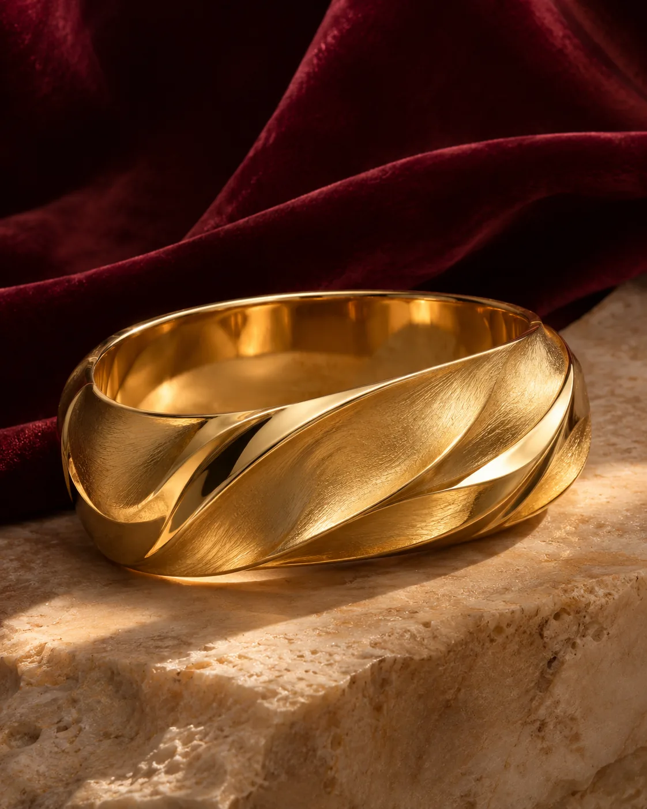
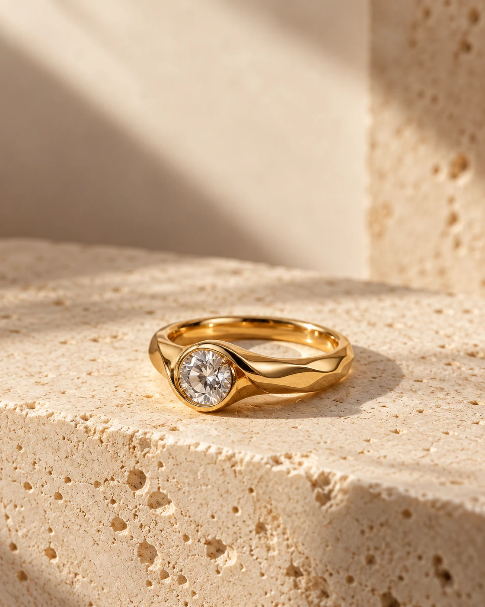
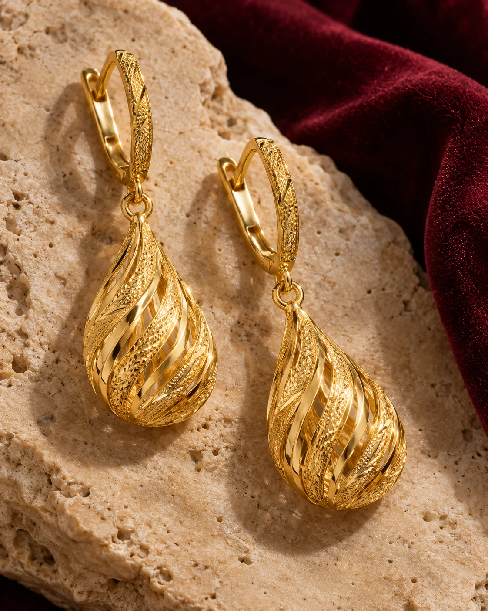
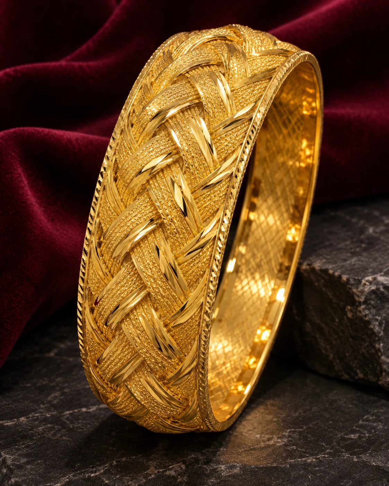
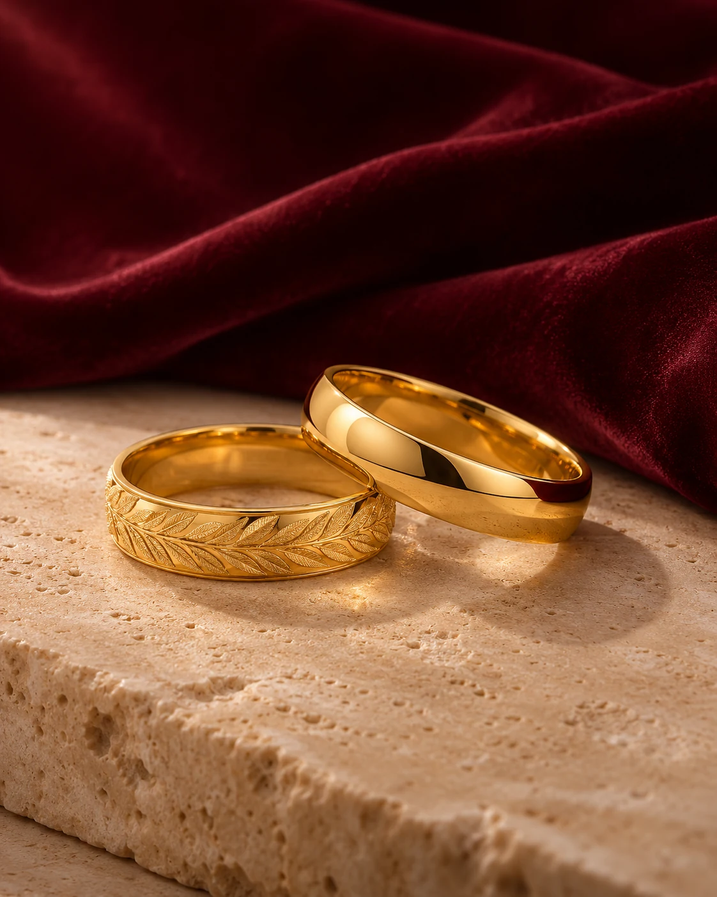
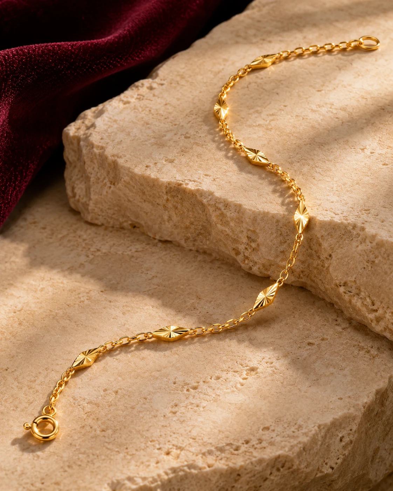

MALATYA · İNÖNÜ KAPALI ÇARŞISI
Her anınıza
eşlik eden
bir ışıltı.
Bir anı, bir söz, bir başlangıç.
Her hikâyenin kendine özgü bir parıltısı var.
Bir bakışta zarafet. Yıllarca süren bir his.
YAYLACI · GÖRSEL HİKÂYELER
Bir an. Bir his.
Bir ışıltı.
Hayatın farklı anlarına üç kısa bakış. Size yakın gelen hikâyeyi açın.


GÖRSEL SEÇKİ
Sizin hikâyeniz,
sizin ışıltınız.
Yüzükten bilekliğe, altı farklı ışıltı.
Görsellere yakından bakın.

01 / 06 YüzüklerBir başlangıcın ışığı
02 / 06 KüpelerHer bakışta bir detay
03 / 06 BileziklerZamansız bir dokunuş04 / 06
KolyelerHep size yakın

05 / 06 AlyanslarBirlikte atılan adımlar
06 / 06 BilekliklerGünlük zarafetin iziGörseller koleksiyon ilhamı içindir. Güncel ürünleri mağazamızda inceleyebilirsiniz.
KÜÇÜK BİR DETAY, BÜYÜK BİR HİS
Bazı anlar
geçer.
Işıltısı kalır.
Bir kutlamada, bir teşekkürde ya da sadece kendiniz için. Seçtiğiniz parçanın anlamı, onu taşıdığınız anda başlar.
Malatya İnönü Kapalı Çarşısı'nda buluşalımHEDİYE SEÇİM REHBERİ
Doğru his,
doğru detay.
Üç küçük seçim yapın. Size uygun bir koleksiyon fikri gösterelim.
ÖZEL BİR GÜN · ZAMANSIZ
Alyanslar
Birlikte kurulan hikâyeye eşlik edecek zamansız bir detay. Farklı formları yakından inceleyin.
Alyansları keşfedinSİZİ BEKLİYORUZ
Işıltıyı yakından
keşfedin.
Yaylacı Kuyumculuk'u Malatya İnönü Kapalı Çarşısı'nda ziyaret edin. Sizin için anlamlı olan detayı birlikte bulalım.
Konumu haritada açın.
İlginizi çeken parçaları yerinde inceleyin.
Ölçü ve detaylar için mağazada görüşelim.
MAĞAZAMIZ
Yaylacı Kuyumculuk
İnönü Kapalı ÇarşısıMalatya Haritada aç (yeni sekme)
Harita bağlantısı İnönü Kapalı Çarşısı konumunu açar.